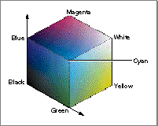

About the QuickDraw 3D Color Utilities
QuickDraw 3D provides a set of utility routines that you can use to manage colors. You can use these routines to add, subtract, scale, interpolate, and perform other operations on colors. These utilities are intended to facilitate the creation of distinctive color schemes (that is, sets of correlated colors) for user interface elements in your application. You can, however, use these routines to manage colors anywhere in your application.QuickDraw 3D supports one color space, the RGB color space defined by three color component values (one each for red, green, and blue). The RGB color space can be visualized as a cube, as in Figure 21-1, with corners of black, the three primary colors (red, green, and blue), the three secondary colors (cyan, magenta, and yellow), and white. See also Color Plate 2 at the front of this book.

You specify a single color in the RGB color space by filling in a structure of typeTQ3ColorRGB:typedef struct TQ3ColorRGB { float r; /*red component*/ float g; /*green component*/ float b; /*blue component*/ } TQ3ColorRGB;The QuickDraw 3D Color utilities all operate on structures of typeTQ3ColorRGB. Each field in anTQ3ColorRGBstructure should contain a value in the range 0.0 to 1.0, inclusive.